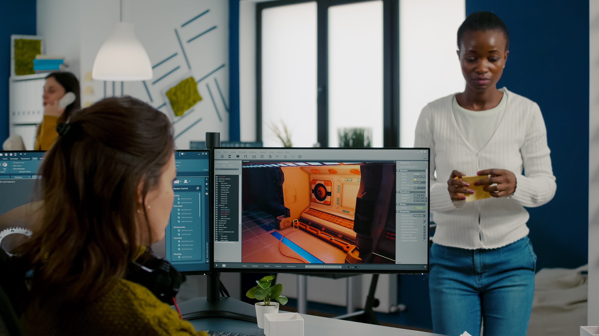

Front-to-Back development process


The good practices of now fast evolving customers and users demands and need want us, software engineers, to focus and center our works around customer and user satisfaction what’s make the frontend of the solution we are building more important than all these backend stacks that are needed for our solution to be more easily managed. Then with the spirit of agile and lean development, the frontend functionalities have more priorities than the backend functionalities. Building fastly the frontend even with simulated data that could allow us to show it to potential users or customers in order to get feedbacks fastly is the first and foremost thing to do. Then using API tools that could help us implement all the endpoints that will serve the data to the frontend is the first step of what I seek to call a front-to-back development process or an up-to-bottom development process. You can use API tools like Postman for building all the requests required by the frontend with the relevant or simulated data. After that, your frontend engineers are ready to use these entry points to build the interface of your tech-enabled solution and once this is done your marketing team could show it to potential customers and users and provide to your product development team the required changes that should be applied to the frontend to make your tech-enabled platform more successful.
That’s what I am doing right now with this tech-enabled platform called J….K which is this journalistic data-driven platform that I was writing about in this article and which will allow you to get metrics like those highlighted in these two articles.
This development process is not new because tech companies like Fog Creek Software and Stack overflow are using it and reading Joel Spolsky maybe can help you learn how they do. It is obvious to first build the interfaces of your software before you go into all these new database technologies and server-side solutions because what you are building is not for your software engineers, DevOps, and Sever administrators but for your customers and users then early in the development process your team should focus on the things that these users and customers will see and continue to improve it during all the lifetime of the development process up until all your backend stack are ready like how they are designed to be in production.
This front-to-back development process seems to be a process for a development team but you also as an alone software engineer who is developing a tech-enabled solution should use this process by starting to develop what your users or customer will see before spending time on the database schemas and server-side operation because if your backend stack is messy and crappy the user or customer doesn't care but if it is your frontend which is you are in real trouble then I advise you to start building from the front.